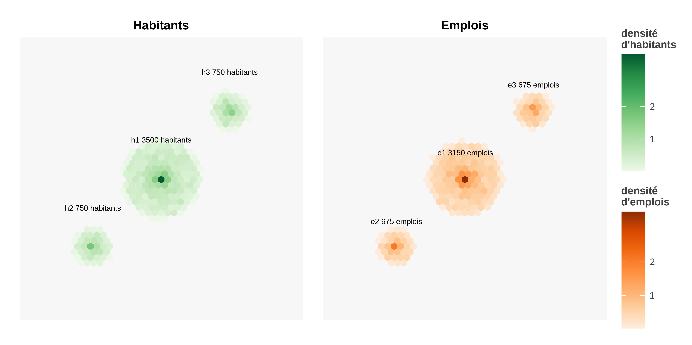
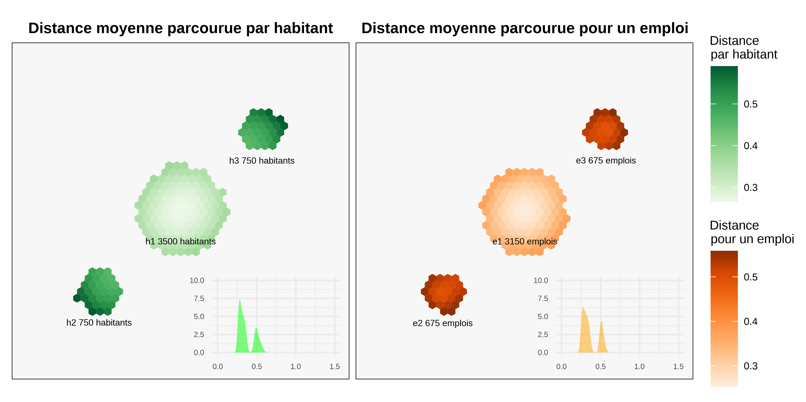
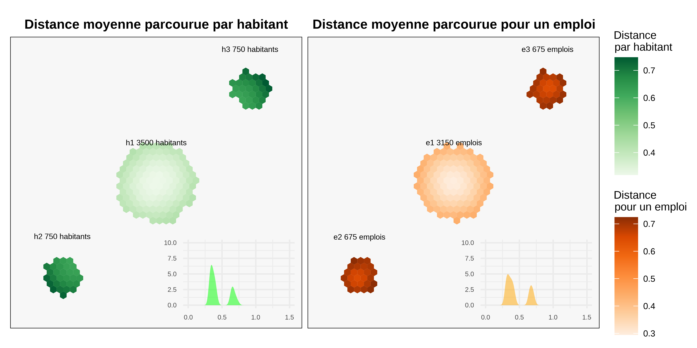
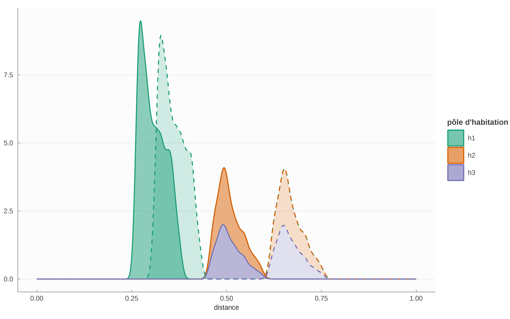
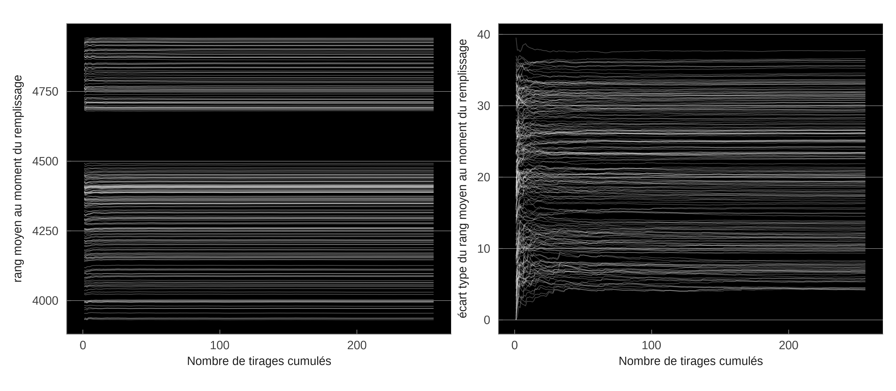
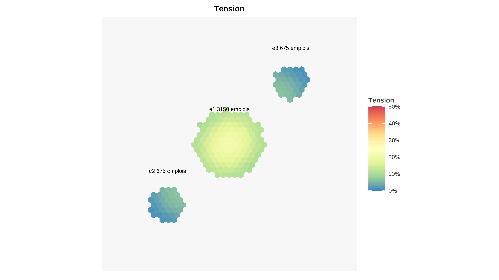

3 Simulations synthétiques
Pour étudier quelques-unes des propriétés du modèle, nous proposons ici d’explorer son comportement sur des données synthétiques. Les données synthétiques, générées de façon explicites, permettent de contrôler les variations de paramètres afin d’en isoler les conséquences. Ces simulations ne prétendent ni à l’exhaustivité ni à la démonstration, mais peuvent servir à appuyer l’intuition. L’ensemble de la partie sur les simulations synthétiques est exécutable au sens de Lasser (2020). Les codes nécessaires à la reproduction de ces simulations et des graphiques associés sont disponibles sur github.com/xtimbeau/meaps et exécutables librement.
3.1 Trois pôles en centre et satellites
Nous construisons un territoire abstrait composé d’un “centre ville” et de “deux périphéries” (figure 3.1). Cette configuration arbitraire nous permet d’évaluer MEAPS en simulant les trajets et leur distribution. Chaque individu et chaque emploi sont localisés, distinctement les uns des autres, ce qui permet de calculer des distances euclidiennes entre chaque habitant et chaque emploi et d’en déduire un classement pour chaque habitant sans ambiguïté des emplois en fonction de leur éloignement. Tous les emplois sont considérés comme substituables et on suppose une probabilité de fuite identique de 10% pour tous les individus. Les distances entre les pôles sont données dans le tableau 3.1 (dans une unité quelconque).
| e1 | e2 | e3 | |
|---|---|---|---|
| h1 | 0.00 | 0.75 | 0.75 |
| h2 | 0.75 | 0.00 | 1.50 |
| h3 | 0.75 | 1.50 | 0.00 |
Pour assurer l’égalité entre demandes et offres d’emploi, on tire aléatoirement 4 500 emplois. Les trois pôles d’emplois ont les mêmes centres que les pôles d’habitation, mais ont une répartition plus resserrée que pour les habitants. Comme indiqué sur la figure 3.1, les tâches d’emplois sont respectivement localisés autour des mêmes centres que les zones d’habitation. Les pôles périphériques comportent moins d’emplois (15% chacun) que le pôle central (70% de l’emploi total) pour rendre compte d’une structuration habituelle où on trouve dans les pôles périphériques avant tout des emplois liés aux services fournis aux résidents (comme des commerces ou des écoles) tandis que la zone d’activité centrale rassemble une plus large palette d’emplois, en plus grand nombre. Nous ne faisons aucune distinction de productivité ou de qualification nécessaire pour les emplois. Cette hypothèse simplifie la simulation du modèle, mais rien n’empêche de distinguer des catégories d’emplois, des catégories d’habitants ni d’introduire des éléments de choix entre distance et nature de l’emploi. Nous ne considérons pas ici le choix de la localisation et considérons toutes les localisations comme exogènes.
Dans l’analyse statistique qui suit, on procédera à une agrégation spatiale en pavant le plan où sont localisés les emplois et les habitants par des hexagones adjacents. Ceci correspond à une analyse empirique où les données de localisation sont carroyées.

La figure 3.2 simule MEAPS à partir des données de figure 3.1. On obtient pour chaque hexagone de résident une valeur moyenne de distance jusqu’à leur emploi. De la même façon, on calcule pour chaque emploi la distance accomplie en moyenne pour l’atteindre.

Cette première représentation graphique permet de voir le fonctionnement du modèle MEAPS. On peut générer une distribution de trajets (dans les vignettes de la figure 3.2). Comme la majorité des emplois se trouvent dans le pôle central, les distances moyennes pour les habitants y sont plus faibles que dans les autres pôles. Le modèle génère un peu de variance à l’intérieur de chaque pôle. On retrouve l’idée que les hexagones d’habitations les plus excentrées génèrent des distances plus importantes. La distribution des distances moyennes pour atteindre un emploi est plus resserrée que celle des distances parcourues en moyenne par habitant. Les moyennes de ces deux distributions sont égales (par construction).
On peut construire une table des flux entre chaque pôles (tableau 3.2). Le premier élément est de noter que les contraintes aux marges sont parfaitement respectées, ce qui est le principe de construction de MEAPS, les approximations faites dans l’algorithme de résolution restant ici inférieures à 10^{-5} au moins. Par ailleurs, la table de flux confirme le diagnostic précédent. La plupart des habitants de h1 (78%) se rendent dans g1 (le même pôle donc). Ce taux d’emploi “intrapôle” est de 42% pour les deux autres pôles. Ceci tient au déséquilibre de localisation des emplois et est une propriété souhaitée du modèle. Cela explique en partie la distribution des distances de la mobilité professionnell pour les habitants et également sa “réciproque”, lorsqu’on calcule les distances moyenne vers un hexagone d’emplois.
| e1 | e2 | e3 | total | |
|---|---|---|---|---|
| h1 | 2 481 | 334 | 335 | 3 150 |
| h2 | 334 | 290 | 50 | 675 |
| h3 | 334 | 51 | 290 | 675 |
| total | 3 150 | 675 | 675 | 4 500 |
Pour apprécier le comportement du modèle, on peut procéder à une expérience de pensée dans laquelle on éloigne les deux pôles satellites du centre (la distance entre 1 et 2 ou 3 passe de 0.7 à 1.2 dans cette expérience). Le tableau 3.3 est obtenu en simulant à nouveau le modèle sur cette géographie alternative. Le résultat est identique à la configuration précédente. Ce résultat est conforme à l’intuition et est une propriété souhaitée du modèle. Puisque les ordres de classement ne changent pas (dès lors que les pôles sont assez éloignés et que la configuration demeure symétrique), les rangs ne sont pas modifiés et donc les flux sont inchangés. Les distributions des distances (sortantes et arrivantes) sont largement modifiées, puisque 2 ou 3 sont plus loin de 1, comme l’indique la figure 3.3. On est tenté de conduire d’autres expériences de pensée pour analyser le comportement du modèle. L’application Shiny accessible à ofce.shinyapps.io/rmeaps permet de conduire toutes ces expériences en utilisant le même code que celui utilisé ici.
| e1 | e2 | e3 | total | |
|---|---|---|---|---|
| h1 | 2 482 | 334 | 334 | 3 150 |
| h2 | 334 | 291 | 51 | 675 |
| h3 | 334 | 51 | 290 | 675 |
| total | 3 150 | 675 | 675 | 4 500 |


3.2 Comparaison avec le modèle gravitaire
Comparer MEAPS au modèle gravitaire permet d’en comprendre les avantages. Pour ce faire, nous simulons un modèle gravitaire suivant l’équation 2.2, c’est-à-dire permettant le calage sur les lignes (chaque individu a un emploi) et sur les colonnes (chaque emploi est pourvu). Ce modèle est simulé au niveau désagrégé, c’est-à-dire au niveau de chaque individu et de chaque emploi à partir de la configuration géographique décrite plus haut en Section 3.1. La spécification du modèle gravitaire est faite en utilisant comme fonction f l’expression suivante où \delta est un paramètre positif :
f(d) = e^{-d/\delta} \tag{3.1}
Il s’agit d’un choix très commun. Le modèle gravitaire est ensuite normalisé en utilisant l’algorithme de Furness (Dios Ortúzar et Willumsen 2011) dans lequel on normalise d’abord sur les lignes (chaque individu a un emploi et un seul en probabilité, en tenant compte du paramètre de fuite), puis sur les colonnes (chaque emploi est pourvu complètement). On itère ces normalisations en ligne puis en colonne jusqu’à obtenir une matrice de flux stable. Ces normalisations suivent les équation 2.3 et équation 2.4.
Ce modèle gravitaire ainsi spécifié est ajusté sur la simulation MEAPS en prenant comme référence les flux du tableau 3.2, construits par agrégation sur les groupes d’habitants et d’emplois – donc une matrice 3 \times 3. L’ajustement est réalisé en calibrant le paramètre \delta de façon à minimiser l’entropie relative de Kullback-Leitner des distributions agrégées (cette notion d’entropie est détaillée dans la Section 4.3). Le résultat de l’estimation est proposé dans le tableau 3.4 et correspond à une valeur de \delta \approx 0.53.
|
MEAPS Fuite à 10% |
Gravitaire Normalisé, δ = 0.53 |
|||||||||
|---|---|---|---|---|---|---|---|---|---|---|
| e1 | e2 | e3 | total | e1 | e2 | e3 | total | |||
| h1 | 2 481 | 334 | 335 | 3 150 | h1 | 2 953 | 106 | 91 | 3 150 | |
| h2 | 334 | 290 | 50 | 675 | h2 | 533 | 128 | 15 | 675 | |
| h3 | 334 | 51 | 290 | 675 | h3 | 514 | 16 | 144 | 675 | |
| total | 3 150 | 675 | 675 | 4 500 | total | 4 000 | 250 | 250 | 4 500 | |
L’ajustement du modèle gravitaire donne un bon résultat. Une des raisons de ce bon résultat découle de la symétrie de la configuration géographique. Les deux satellites sont à même distance du pôle central et la fonction f qui ne dépend que de la distance permet d’assurer une répartition des flux entre chacun des pôles sans trop de difficulté. Si on prend une configuration non symétrique, en éloignant un des deux satellites, l’autre restant à sa place, on obtient un schéma différent, le modèle gravitaire amplifiant les asymétries.
|
MEAPS Fuite à 10% |
Gravitaire Normalisé, δ = 0.53 |
|||||||||
|---|---|---|---|---|---|---|---|---|---|---|
| e1 | e2 | e3 | total | e1 | e2 | e3 | total | |||
| h1 | 2 482 | 334 | 334 | 3 150 | h1 | 2 984 | 107 | 59 | 3 150 | |
| h2 | 334 | 291 | 51 | 675 | h2 | 538 | 128 | 9 | 675 | |
| h3 | 334 | 51 | 290 | 675 | h3 | 478 | 15 | 182 | 675 | |
| total | 3 150 | 675 | 675 | 4 500 | total | 4 000 | 250 | 250 | 4 500 | |
Le modèle MEAPS conserve une configuration identique dans le cas de pôles satellitaires éloignés du centre, parce que la configuration reste symétrique et qu’aucun rang n’est modifié. En revanche, le modèle gravitaire renvoie une réponse très différente de celle du cas de référence : les habitants des satellites se tournent plus vers les emplois de leur satellite respectif et les flux entre pôles satellites et le pôle central se réduisent. Cette propriété du modèle gravitaire est attendue : la fonction f donne un poids plus faible aux emplois plus distants. A la limite où cet éloignement devient particulièrement grand, les flux entre pôles satellites et le pôle central vont se tarir presque entièrement. Le paramètre estimé sur la simulation MEAPS est de l’ordre de 0.53, ce qui est l’ordre de grandeur du rayon du pôle central (0,5). Pour une distance de quelques fois 0.53, les flux entre pôles seront quasi nul. La réponse de MEAPS parait ici plus adaptée à ce que l’on observe. Lorsque des communes sont satellites d’un pôle central à une distance de quelques dizaines de kilomètres, il existe des flux vers cette commune pour occuper des emplois, et le fait que la commune soit plus éloignée de quelques kilomètres ne tarit pas drastiquement ces flux. On s’attend à une faible sensibilité de la distance à cette échelle. Nous verrons lors de l’application à l’agglomération de la Rochelle, en utilisant des données décrivant les flux entre commune de résidence et commune d’emploi (issues de MOBPRO (2022)) que MEAPS permet une meilleure représentation de la réalité que le modèle gravitaire.
Si l’on reconduit la procédure d’estimation du paramètre \delta sur la configuration géographique où les pôles satellite sont éloignés on aboutit à \delta \approx 0.65. Cette valeur est très différente du paramètre précédent, ce qui montre à la fois la “plasticité” du modèle gravitaire et son manque de fiabilité, comme si la force “gravitationnelle” pouvait changer du tout au tout à chaque nouvelle donnée (tableau 3.6).
|
MEAPS Fuite à 10% |
Gravitaire Normalisé, δ = 0.65 |
|||||||||
|---|---|---|---|---|---|---|---|---|---|---|
| e1 | e2 | e3 | total | e1 | e2 | e3 | total | |||
| h1 | 2 482 | 334 | 334 | 3 150 | h1 | 2 946 | 123 | 81 | 3 150 | |
| h2 | 334 | 291 | 51 | 675 | h2 | 553 | 109 | 13 | 675 | |
| h3 | 334 | 51 | 290 | 675 | h3 | 501 | 18 | 155 | 675 | |
| total | 3 150 | 675 | 675 | 4 500 | total | 4 000 | 250 | 250 | 4 500 | |
3.3 Procédure d’estimation
Il est possible de modifier les pondérations des probabilités d’absorption de façon à modifier la table des flux. Ceci est illustré dans la table suivante où on a doublé pour chacune des 9 paires possibles de zone d’habitation (3) et de zone d’emploi (3) la probabilité relative d’absorption successivement. La configuration géographique est celle de la figure 3.1, avec un centre et deux satellites. Le centre comporte plus d’emplois que de résidents, ce qui oblige à des flux entrants dans la zone 1 comme indiqués dans la- tableau 3.2. On parle de doublement relatif de la probabilité, parce que les contraintes de constance de probabilité de fuite et de saturation des emplois imposent une réduction des probabilités d’absorption des autres emplois, ce qui est assuré dans l’algorithme qui implémente MEAPS.
Le tableau 3.7 décrit les variations de flux par rapport à une situation de référence (celle du tableau 3.2), arrondi à l’entier le plus proche. Il y a donc 3 \times 3 matrices 3 \times 3. Chacune des sous matrices indique les variations de flux pour chaque paire origine-destination ; il y a 9 possibilités de doublement de la probabilité d’absorption, qui constituent les lignes et les colonnes de la matrice englobante. On notera que les sommes des colonnes et des lignes de chaque sous matrice sont nulles, ce qui indique le respect des contraintes en ligne et en colonne.
Conformément à l’intuition, et malgré les effets induits par le respect des contraintes en ligne et en colonne, on observe bien que la paire zone d’habitation-zone d’emploi qui se voit augmentée en probabilité relative connait des flux supérieurs. Pour compenser ces flux supérieurs, dans la même colonne, c’est-à-dire pour les flux en provenance des autres zones d’habitation, on constate systématiquement une diminution des flux en provenance des autres zones d’habitation. Symétriquement, un accroissement des flux de la zone d’habitation i vers la zone d’emploi j induit toujours une diminution des flux de i vers les autres zones d’emploi.
| e1 | e2 | e3 | ||||||||
|---|---|---|---|---|---|---|---|---|---|---|
| e1 | e2 | e3 | e1 | e2 | e3 | e1 | e2 | e3 | ||
| h1 | h1 | 76 | −38 | −38 | −72 | 55 | 17 | −72 | 17 | 55 |
| h2 | −38 | 27 | 11 | 81 | −63 | −18 | −9 | 1 | 8 | |
| h3 | −38 | 11 | 27 | −9 | 8 | 1 | 81 | −18 | −63 | |
| h2 | h1 | −59 | 75 | −15 | 75 | −76 | 0 | 2 | −26 | 24 |
| h2 | 51 | −58 | 7 | −80 | 87 | −7 | 7 | −12 | 5 | |
| h3 | 9 | −17 | 8 | 5 | −12 | 7 | −9 | 39 | −30 | |
| h3 | h1 | −59 | −15 | 75 | 2 | 24 | −26 | 75 | 1 | −76 |
| h2 | 9 | 8 | −17 | −9 | −30 | 39 | 5 | 7 | −11 | |
| h3 | 51 | 7 | −58 | 7 | 5 | −13 | −80 | −7 | 87 | |
| Le tableau représente l'écart entre les flux obtenus pour une probabilité d'absorption doublée pour la zone i d'habitation et la zone j d'emploi, pour chaque paire de zones habitation/emploi. La première matrice en haut à gauche indique donc que le flux entre la zone 1 d'habitation et la zone 1 d'emploi est accru de 76 lorsque la probabilité d'absorption relative est doublée. Pour compenser ce flux plus important entre 1 et 1, le flux en la zone d'habitation 2 et l'emploi 1 est réduit de 38, ce qui implique à son tour que ceux entre 2 et 2 et entre 2 et 3 s'accroissent. | ||||||||||
Une propriété intéressante des matrices du tableau 3.7 est que les 9 matrices 3 \times 3 forment un espace vectoriel de dimension 41. Ceci est attendu, puisque les contraintes réduisent la dimension de 9 (=3\times 3) à 4, puisqu’il y a 3 contraintes dans chaque dimension (lignes et colonnes) et qu’une est redondante (si les somme sur chaque ligne sont nulles, alors la somme de tous les coefficients est nulle et donc si les sommes sur deux colonnes sont nulles, la troisième l’est nécessairement). Cela indique que, au moins localement (au voisinage de la matrice de flux calculée dans le tableau 3.2), il est possible de modifier les probabilités d’absorption pour atteindre n’importe quelle matrice de flux. A l’approximation linéaire près, il est donc possible de reproduire n’importe quelle structure de flux agrégés par un jeu de paramètres saturant exactement la dimension de cette structure de flux. Cette propriété permet d’envisager différentes approches d’estimations, suivant les données dont on dispose et du nombre de degrés de liberté que l’on est prêt à consacrer à la reproduction des données.
1 Les valeurs propres de la matrice 9 \times 9 constituée des 9 vecteurs colonnes des 9 matrices “dérivées” sont (133.3, 97.3, -28.6, 22.0, 0, 0, 0, 0, 0). Les 5 valeurs propres nulles et les 4 non nulles permettent de conclure que la dimension de l’espace vectoriel engendré par les 9 matrices est 4.
Le temps de calcul peut être assez long du fait de la nécessité de répéter un grand nombre de tirages, mais la section suivante ( Section 3.4) montre que ce nombre peut rester raisonnable. Une estimation de ce type est mise en oeuvre par une procédure itérative dans la section Chapitre 4, permettant de reproduire à l’aide de MEAPS les données issues de l’enquête mobilités professionnelles MOBPRO (2022) avec un schéma de calcul qui peut se mettre facilement en œuvre.
3.4 Ergodicité en pratique
L’utilisation de données synthétiques permet de tester simplement l’hypothèse d’ergodicité. On a conjecturé que les différentes grandeurs moyennes sur les permutations u étaient assimilables à des observations, éventuellement répétées. A ce stade de simulations synthétiques nous ne confrontons pas le modèle à des observations (voir Chapitre 4), mais nous allons montrer que l’estimation des valeurs moyennes ne demande pas l’examen des I! permutations possibles2 et peut se contenter d’une agrégation spatiale et de quelques tirages de permutations.
2 Par la formule de Stirling log_{10}(I!) \approx (n +1/2)log_{10} n +log_{10}\sqrt{2} - n log_{10}e \approx 5\times10^5 pour I=10^5, ce qui fait un nombre de grande taille.
Pour illustrer cette propriété, nous répétons les simulations du modèle pour plusieurs tirages de priorités (notés u dans la section Section 2.3.3), suivant une méthode de Monte-Carlo. En prenant la moyenne sur un échantillon de u, on peut construire un estimateur des grandeurs moyennes et montrer qu’avec un échantillon petit par rapport à I!, on peut les estimer avec fiabilité et dans un temps raisonnable. Cette propriété sera montrée sur la structure géographique particulière que nous avons synthétisée, sans que cela permette de le généraliser avec certitude. Il existe sans doute des configurations spatiales pathologiques qui contredisent cette conjecture.
La figure 3.5 illustre les processus stochastiques à l’œuvre dans le modèle et leur résolution par la moyennisation sur les tirages possibles. On applique le modèle en tirant aléatoirement des permutations de priorité entre les résidents. On représente alors pour quelques hexagones d’habitation (tirés au sort) l’ensemble des choix de destination (carroyés dans les hexagones). Le carroyage opère déjà une moyennisation puisque chacun des individus de chaque hexagone a un ordre de priorité différent. On représente alors les quantités d’emplois (la probabilité de choisir un emploi qui se trouve dans l’hexagone d’arrivée). Les lignes blanches illustrent la dépendance au tirage de priorité. Mais au bout de quelques tirages, ces probabilités convergent en moyenne. Pour simuler le modèle, il n’est pas nécessaire (en toute vraisemblance) de parcourir l’univers complet des permutations.

Le tableau 3.8 indique les intervalles de confiance à 90% que l’on peut construire à partir des simulations précédentes. On obtient une stabilité satisfaisante, bien que les flux agrégés soient stochastiques. Pour une centaine de tirages on peut obtenir une précision supérieure à 10^{-3}.
| e1 | e2 | e3 | |
|---|---|---|---|
| h1 | 2481 |
334 |
335 |
| h2 | 334 |
290 |
50 |
| h3 | 334 |
51 |
290 |
| Source: MEAPS, intervalle à 95%, 1024 tirages | |||
Le schéma de saturation et de priorité est illustré par la figure 3.6 ci-dessous. Pour chaque carreau d’arrivée (un emploi), on représente le rang moyen (gauche) et son écart-type (droite) au moment de la saturation. La caractère stochastique découle du tirage aléatoire de l’ordre de chaque individu (les carreaux de départ). Pour la plupart des emplois, le rang moyen de saturation ergodique est atteint très rapidement. Les lignes blanches sont rapidement horizontales, indiquant une rapide convergence du rang moyen au fur et à mesure que les tirages s’accumulent. Ce graphique confirme qu’à quelques exceptions près, l’état du système est stable après quelques tirages. Le panneau de droite illustre l’écart-type observé sur les tirages cumulés. La nature stochastique du modèle induite par les tirages est ainsi illustrée.

3.5 Tension localisée par emploi
Le rang moyen au moment de la saturation est une information qui peut être utilisé pour construire un indicateur localisé de tension comme sur la figure 3.7. L’indicateur de tension donne une information distincte de la distance moyenne ou de la densité de population ou d’emploi. Les emplois les plus tendus se trouvent sur l’axe qui relie des pôles. Les emplois situés à la périphérie du pôle central ont un niveau de tension proche (mais un peu supérieur) à ceux situés dans les satellites sur la bordure pointant vers le pôle central. Ces éléments peuvent être utilisés pour identifier les zones pertinentes de développement de l’emploi.

L’expérimentation dans l’application Shiny permet d’étudier différentes propriétés de l’indicateur de tension, en particulier lorsque la tension globale est forte (moins d’emploi que de résidents) ou faible (excès d’emplois sur les résidents). Dans le cas où il y a un excès d’emploi sur les résidents, il est possible d’observer une tension locale sur certains emplois.
3.6 Simulation synthétiques dans Shiny
L’application Shiny permet de générer des géographies synthétiques et de simuler le modèle MEAPS sur ces distributions. La plupart des graphiques de ce chapitre peuvent être reproduits de cette façon. L’application permet de choisir la taille du problème (n le nombre d’actifs et k le nombre d’emploi). En choisissant plus d’emplois que d’actifs on spécifie un problème où il y a excès d’emplois et donc pas de contrainte globale. Dans le cas inverse, il y a une fuite, calculée de façon à ce que le nombre d’actifs restant sur la zone soit égal au nombre d’emplois.
Différents paramètres permettent de spécifier la géographie, c’est-à-dire la position relative des pôles ou leur taille. Le simulateur simule par Monte-Carlo plusieurs ordres de passages et affiche les graphiques correspondants au fur et à mesure de la convergence, en accumulant la moyenne des différentes variables du modèle. Cette fonctionnalité permet de visualiser simplement la propriété d’ergodicité évoquée plus haut.